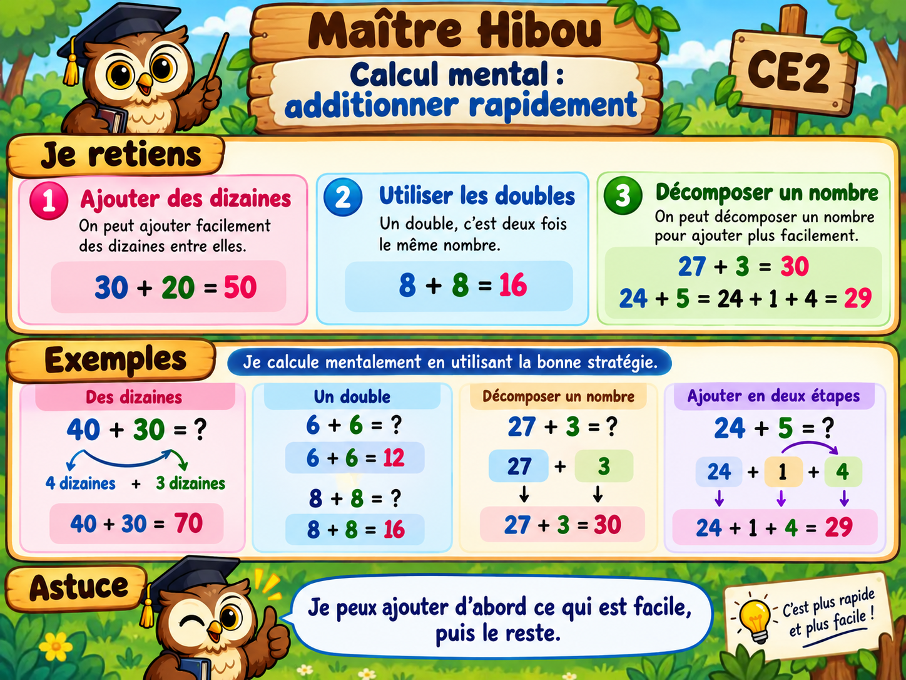

À toi de jouer !
10 questions. Réponds puis vérifie. Une bonne réponse te permet de continuer.
Bravo, tu as terminé les 10 questions !
Tu peux maintenant valider cette leçon.

10 questions. Réponds puis vérifie. Une bonne réponse te permet de continuer.
Tu peux maintenant valider cette leçon.